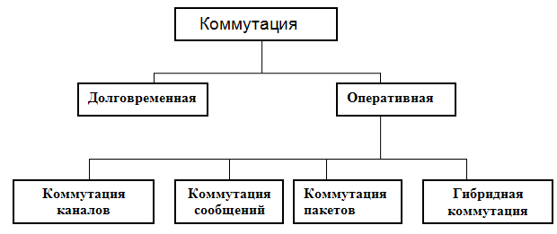
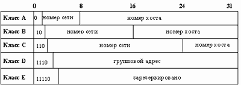
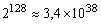
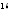
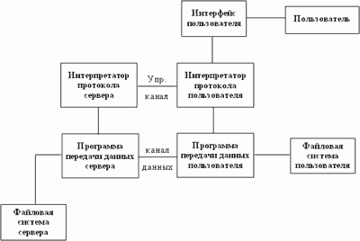
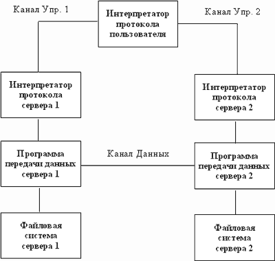
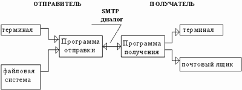

|
|
Особенностью межсетевых взаимодействий в IP-сетях является использование транспортных сетей (магистральных, городских, сетей доступа), содержащих различные средства коммутации. При этом информационный обмен между двумя абонентами (в отличие от локальных сетей) осуществляется по индивидуальным каналам с использованием протоколов типа "точка-точка" (PPP, SLIP, LAP-B, LAP-D), которые реализуют процедуры управления потоком кадров с учетом специфики средств коммутации. Разнообразие средств и способов коммутации предполагает их классификацию.
Упрощенная классификация способов коммутации приведена на рис. 4.1.

Рис.4.1. Классификация способов коммутации.
Долговременная (кроссовая) коммутация — это такой способ коммутации, при которой между двумя точками сети устанавливается постоянное, прямое соединение, длительность которого может измеряться часами, сутками или большими интервалами времени. Каналы, участвующие в таких соединениях, называются выделенными.
Оперативная коммутация подразделяется на следующие основные виды:
коммутация каналов,
коммутация сообщений,
коммутация пакетов,
гибридная коммутация.
При коммутации каналов обеспечивается прямое временное физическое соединение каналов сети между любой парой оконечных пунктов этой сети.
Коммутация каналов передачи данных — это такая коммутация, при которой обеспечивается соединение каналов вторичной сети электросвязи для образования канала передачи данных. ГОСТ 17657-79.
При коммутации сообщений в центре коммутации производится прием, запоминание и последующая передача полных сообщений в соответствии с адресом (СТ ИСО 2382/9-84).
При коммутации пакетов, представленное в виде адресованных пакетов сообщение, передается таким образом, что после передачи очередного пакета канал передачи данных освобождается для передачи других пакетов (СТ ИСО 2382/9-84).
При этом возможны два способа передачи: способ, основанный на организации виртуального канала (на время передачи сообщения), и дейтаграммный способ в противном случае.
Виртуальный (логический) канал — это такая форма передачи данных по сети, при которой у взаимодействующих абонентских систем возникает иллюзия наличия между ними прямого канала. Такой способ передачи данных в глобальных сетях обеспечивает протокол TCP, а в локальных сетях, например, протокол SPX. Дейтаграммный способ передачи характерен для протоколов IP, UDP в глобальных сетях и IPX — в локальных сетях.
При гибридной коммутации в одном и том же центре коммутации одна часть сообщений обслуживается в режиме коммутации каналов, а вторая часть - в режиме коммутации пакетов или коммутации сообщений.
Протокол SLIP (Serial Line Internet Protocol) -- протокол для обмена данными по выделенным или коммутируемым каналам связи с использованием IP – сервиса. Этот протокол позволяет подключиться к TCP/IP по телефону с использованием модема через последовательный порт персонального компьютера. Он широко использовался ранее, поддерживается и теперь. SLIP не обеспечивает установление соединения через несколько узлов и не поддерживает адресацию, принятую в Internet. . В отличии от Ethernet, SLIP не "заворачивает" IP-пакет в свою обертку, а "нарезает" его на "куски".
Протокол PPP (Point to Point Protocol) -- соединение типа "точка - точка". Имеет то же назначение, что и SLIP (управление передачей данных по выделенным или коммутируемым линиям связи), но это более поздний и совершенный протокол.
Согласно RFC-1661, PPP обеспечивает стандартный метод взаимодействия двух узлов сети (обеспечивается двунаправленная одновременная передача данных). Как и в SLIP, данные "нарезаются" на фрагменты, которые называются пакетами. Пакеты передаются от узла к узлу упорядоченно. В отличие от SLIP, PPP позволяет одновременно передавать по каналу связи пакеты различных протоколов. Кроме того, PPP предполагает процесс автоконфигурации обеих взаимодействующих сторон.
PPP состоит из трех частей: механизма инкапсуляции (encapsulation), протокола управления соединением (link control protocol) и семейства протоколов управления сетью (network control protocols).
Механизм инкапсуляции PPP обеспечивает передачу пакетов различных протоколов по одному каналу путем упаковки одного протокола в формат другого протокола (вышележащий пакет вкладывается в поле данных нижележащего протокола). Протокол управления соединением используется для установления, поддержки и завершения связи, а для работы с протоколами сетевого уровня. PPP содержит набор протоколов управления сетью. Более детально с протоколом PPP можно познакомиться в RFC-1661 и RFC-1548.
В 1998 г. была создана расширенная версия PPP протокол PPTP (Point to Point Tunneling Protocol). Этот протокол предназначен для обеспечения защищенного удаленного доступа через Internet (превращает обычный телефонный вызов в защищенный канал связи между двумя компьютерами частной сети). PPTP поддерживает такие средства, как сжатие, шифрование и аутентификация (распознавание пользователя).
При согласовании различных протоколов могут использоваться методы инкапсуляции, трансляции и мультиплексирования.
Инкапсуляция — это метод упаковки одного протокола в формат другого протокола (вышележащий пакет вкладывается в поле данных нижележащего). В традиционном понимании термин "инкапсуляция" означает образование капсулы вокруг чужих для организма веществ (инородных тел, паразитов и т.д.). В рамках межсетевого обмена понятие инкапсуляции имеет расширенное толкование. Это не только инкапсуляция в традиционном понимании (например, пакета IP в Ethernet-фрейм), но и наряду с добавлением служебной информации еще и, если это необходимо, разбиение пакета на более мелкие фрагменты обмена через один канал.
Инкапсуляция может быть использована для транспортных протоколов любого уровня. Например, протокол сетевого уровня Х.25 может быть инкапсулирован в протокол транспортного уровня TCP, или же протокол сетевого уровня IP может быть инкапсулирован в протокол сетевого уровня Х.25. Для согласования сетей на сетевом уровне могут быть использованы многопротокольные и инкапсулирующие маршрутизаторы, а также программные и аппаратные шлюзы.
Обычно инкапсуляция приводит к более простым и быстрым решениям по сравнению с трансляцией, так как решает более частную задачу, не обеспечивая взаимодействия с узлами транзитной сети.
Трансляция обеспечивает согласование двух протоколов путем преобразования (трансляции) сообщений, поступающих от одной сети, в формат другой сети. Транслирующий элемент, в качестве которого могут выступать, например, программный или аппаратный шлюз, мост, коммутатор или маршрутизатор, размещается между взаимодействующими сетями и служит посредником в их диалоге.
Мультиплексирование. Другим подходом к согласованию коммуникационных протоколов является технология мультиплексирования. Этот подход состоит в установке нескольких дополнительных стеков протоколов на одной из конечных машин, участвующих во взаимодействии. Компьютер с несколькими стеками протоколов использует для взаимодействия с другим компьютером тот стек, который понимает этот компьютер.
Уровень межсетевого обмена (3 уровень стека TCP/IP, уровень Internet) является базовым в архитектуре стека TCP/IP (Transmission Control Protocol/Internet Protocol). При этом протокол IP играет центральную роль не только на этом уровне, но в семействе протоколов TCP/IP в целом.
Особенность протокола IP, который относится к сетевому уровню модели OS/, состоит в том, что он позволяет создать единую логическую сеть путем реализации протокола IP во всех узлах и шлюзах сложной физической сети. Такая сеть может состоять из соединенных шлюзами разнородных пакетных подсетей, работающих со своими специфическими протоколами.
Протокол IP специфицирован на передачу дейтаграмм (datagram) и связан со следующими функциями межсетевого обмена: передача данных в сеть и получение данных из сети; адресация, маршрутизация и фрагментация дейтаграмм.
К уровню межсетевого обмена относятся также протоколы:
ARP — протокол разрешения адресов, отображает межсетевые адреса в физические,
RARP — обратный протокол разрешения адресов, отображает физические адреса в интерсетевые,
ICMP — межсетевой протокол, обеспечивает передачу управляющих сообщений и сообщений об ошибках между хостами и шлюзами; этот протокол является расширением уровня IP.
К уровню межсетевого обмена относятся также протоколы маршрутизации RIP (Routing Information Protocol, RFC 1058, 1988 г), OSPF (Open Shortest Path First), EGP (Exterior Gateway Protocol, RFC 904, 1984 г.), BGP (Border Gateway Protocol, RFC 1163). Протоколы RIP и OSPF являются внутренними (протоколы автономных систем). Протокол RIP — для малых локальных сетей, а сложный OSPF — для больших и очень больших сетей.
Существует несколько версий протокола IP. Номера версий протокола IP приведены в RFC 1700. В настоящее время широко используется версия Ipv4 (RFC 791); протокол Ipv6, за которым будущее, применяется в высокоскоростных сетях. Находит также применение протокол Ipv5, который существует под названием потокового протокола Internet (Internet Stream Protocol, RFC 1819). Протокол Ipv5 работает параллельно, а не вместо Ipv4 и ориентирован на передачу в реальном времени мультимедийной информации (пакетные потоки цифрового аудио и видео, распределенная имитация процессов и распределенные игры).
Формат пакета протокола Ipv4 приведен на рис. 4 .2.
4 бита |
Версия |
Версия конкретного протокола IP. Протокол представлен для версии 4 |
4 бита |
Длина заголовка |
Число 32-хразрядных слов перед полем данных |
1 байт |
Тип услуги |
Вид услуги, например, длительность допустимой задержки |
2 байта |
Длина |
Общий размер данного IP – пакета без заголовка |
2 байта |
Идентификатор пакета |
16-тиразрядный идентификатор пакета, формируемый в узле источника |
3 бита |
Флаг |
Параметр, определяющий место дейтаграммы сообщений (первое, промежуточное, последнее) |
13 бит |
Смещение фрагмента |
Положение данного пакета (или фрагмента) в исходном блоке данных |
1 байт |
Время жизни |
Максимальное время в секундах, в течение которого данный пакет может существовать в сети. Каждое устройство, осуществляющее обработку данного пакета, уменьшает значение этого поля |
1 байт |
Протокол |
Протокол более высокого уровня, определяющий формат поля данных |
2 байта |
Контрольная сумма |
Результат анализа данных в заголовке, используемый для контроля на целостность. Вычисляется только по заголовкам. |
4 байта |
Адрес отправителя |
Адрес узла-отправителя пакета Адрес узла-получателя пакета |
4 байта |
Адрес получателя |
|
Может иметь переменную длину |
Опции |
Параметры не регламентированы. Различные фирмы могут использовать это поле для собственных нужд |
Переменная |
Заполнитель |
Биты, дополняющие заголовок таким образом, чтобы он укладывался в 32-хразрядное поле |
|
Переменная до 65 535 байт |
Поле данных |
Конверт, в котором содержатся пакеты, представленные в формате протокола более высокого уровня |
Рис. 4.2. Формат пакета Ipv4 протокола.
Данные заголовка позволяют определить сетевой интерфейс получателя (IP-адрес получателя) пакета и направить пакет либо на сетевой интерфейс данной сети, либо на соответствующий шлюз. При этом, если пакет слишком долго "гуляет" по сети, то очередной шлюз может уничтожить этот IP-пакет и отправить на машину-отправителя уведомление (ICMP-пакет) о том, что надо использовать другой шлюз. На этом принципе работает программа ping, которая используется для определения маршрутов прохождения пакетов по сети.
Зная протокол транспортного уровня, IP-модуль производит разинкапсуляцию информации своего пакета и направляет данные на модуль обслуживания соответствующего транспорта.
При обычной процедуре инкапсуляции IP-пакет помещается в поле данных кадра (фрейма) протокола канального уровня. Если же это невозможно, то пакет разбивается на более мелкие фрагменты. Для восстановления исходного IP-пакета, его «нарезанные» фрагменты должны содержать информацию об их местоположении в исходном IP-пакете. Для этой цели используется поле «флаг» (flags) и «смещение фрагмента» (fragmentation offset). В этих полях определяется, какая часть пакета получена в данном фрейме. Размер максимально возможного фрейма, который передается по сети, определяется величиной MTU (Maximum Transsmion Unit).
IP-адрес — это 4-байтовая цифровая последовательность (RFC791). Принято каждый байт этой последовательности записывать в виде десятичного числа. Например, 144.106.166.32
IP-адрес состоит из двух частей: адреса сети и номера хоста (обычно под хостом понимают компьютер, подключенный к сети). В настоящее время, понятие "хост" имеет более широкое толкование. Это может быть не только компьютер с сетевой картой, но и любое устройство, которое имеет свой сетевой интерфейс (например, принтер, робот, холодильник и т.д.).
Существует 5 классов IP-адресов. Эти классы отличаются друг от друга количеством битов, отведенных на адрес сети и адрес хоста в сети. На рис. 4.3 показаны эти пять классов.

Рис. 4.3. Классы IP-адресов
Используя данные, приведенные на рис. 4.3, нетрудно подсчитать количество сетей и узлов для каждого класса сетей.
Класс |
Диапазон значений первого октета |
Возможное количество сетей |
Возможное количество узлов |
А |
1 - 126 |
126 |
16777214 |
B |
128 - 191 |
16382 |
65534 |
C |
192 - 223 |
2097150 |
254 |
D |
224 - 239 |
- |
228 |
E |
240 - 247 |
- |
227 |
Рис. 4.4. Характеристики классов IP-адресов
Адреса класса А предназначены для больших сетей общего пользования. В настоящее время эти адреса распределяются по специальной схеме, в которую включены провайдеры Internet-услуг. Распределение адресов осуществляется с использование протокола CIDR.
CIDR (Classless InterDomain Routing, RFC 1517-1520) — протокол бесклассовой (классы и номера сетей не используются) междоменной маршрутизации. Протокол CIDR используется в маршрутных таблицах Internet (таблицах провайдеров). В клиентских сетях продолжает использоваться классовая адресация. Различают крупных провайдеров которые, предоставляют услуги другим провайдерам и отдельным лицам, и провайдеров, которые обеспечивают доступ в Internet отдельным лицам и бизнес предприятиям. Применение CIDR позволило предотвратить экспоненциальный рост маршрутных таблиц Internet.
Адреса класса B предназначены для использования в сетях среднего размера (сети больших компаний, научно-исследовательских институтов, университетов).
Адреса класса C предназначены для использования в сетях с небольшим числом компьютеров (сети небольших компаний и фирм).
Адреса класса D используют для обращения к группам компьютеров, а адреса класса E зарезервированы для проведения экспериментов.
Среди всех IP-адресов имеется зарезервированных под специальные нужды (см. Рис. 4.5).
IP-адрес |
Значение |
все нули |
данный узел сети |
номер сети | все нули |
данная IP-сеть |
все нули | номер узла |
узел в данной (локальной) сети |
все единицы |
все узлы в данной локальной IP-сети |
номер сети | все единицы |
все узлы указанной IP-сети |
127.0.0.1 |
"петля" |
Рис. 4.5. Выделенные IP-адреса
Адрес 127.0.0.1 предназначен для тестирования программ и взаимодействия процессов в рамках одного компьютера. В большинстве случаев в файлах настройки этот адрес обязательно должен быть указан, иначе система при запуске может зависнуть. Наличие "петли" чрезвычайно удобно с точки зрения использования сетевых приложений в локальном режиме для их тестирования и при разработке интегрированных систем. Сеть класса A 127.0.0.0. реально не описывает ни одной настоящей сети. 127. любая последовательность предназначена для организации циклов. Рабочая станция посылает пакеты сама себе.
Существует адресное пространство, выделенное для частного применения (эти IP-адреса называются «серыми» и используются для внутренних целей). Вот эти IP-адреса (RFC 1918).
Одна сеть класса A: 10.0.0.0.
16 сетей класса B: 172.16.0.0…172.31.0.0.
256 класса C: 192.168.0.0…192.168.255.0.
Например, BSUIR использует два сегмента с адресами: 172.16.0.0, 172.17.0.0.
Реальные адреса выделяются организациями, предоставляющими IP-услуги, из выделенных для них пулов IP-адресов. Согласно документации NIC (Network Information Centre) IP-адреса предоставляются бесплатно, но в прейскурантах наших организаций (как коммерческих, так и некоммерческих), занимающихся Internet-сервисом предоставление IP-адреса стоит отдельной строкой.
IP-адрес имеет два иерархических уровня (рис.4.6). Дефицит номеров сетей и экспоненциальный ростом таблиц маршрутизации в Internet привели к необходимости введения третьего уровня иерархии — уровня подсетей. Уровень подсетей вводится путем деления области номера устройства на две части: номера подсети и номера устройства, см. рис.4.7.
Префикс сети |
Номер устройства |
Префикс сети |
Номер подсети |
Номер устройства |
Рис.4.6. Трехуровневая иерархия
Такой подход к IP-адресации снимает проблему роста таблиц маршрутизации, поскольку информация о топологии корпоративных сетей становится ненужной магистральным маршрутизаторам Internet. Разбиение сети на подсети проявляется только локально и не влияет на IP-адресацию. При этом задача различения отдельных подсетей возлагается на маршрутизаторы частной сети. Это позволяет администратору частной сети вносить любые изменения в логическую структуру сети, обусловленные расширением или реорганизацией сети.
Организация подсетей рассматривается в RFC 950. RFC 950 определяет стандартный способ использования подсетей в IP-адресе.
Для передачи трафика в организацию магистральные маршрутизаторы Internet используют сетевой префикс адреса получателя (номер сети), а передача трафика индивидуальным подсетям осуществляется маршрутизаторами организации с использованием расширенного сетевого префикса. (префикс сети и номер подсети).
Понятие расширенного сетевого префикса, по существу, эквивалентно понятию маска подсети (subnet mask). Маска подсети — это двоичное число, содержащее единицы в тех разрядах, которые относятся к расширенному сетевому префиксу. Это четыре байта, которые накладываются на IP-адрес для получения номера подсети (логическое умножение битов маски на биты IP-адреса).
В целях уяснения понятия «маска подсети» приведем маски стандартных сетей:
Маска сети класса А 255.0.0.0.
Маска сети класса В 255.255.0.0.
Маска сети класса С 255.255.255.0.
В качестве примера рассмотрим процесс разбиения базовой сети класса С 192.168.02.0 на 4 подсети. Для получения 4 сетей необходимо использовать два старших бита последнего 4 байта. При этом маска подсети будет иметь вид 255.255.255.192. В двоичном коде эта маска имеет вид
11111111. 11111111. 11111111.11000000.
На сеть 192.168.02.0 /24 накладываем маску 255.255.255.192:
11000000. 10101000. 00000010.00000000
11111111. 11111111. 11111111.11000000.
В результате получаем следующие подсети:
Подсеть № 0 192.168.02.0 (00) 1 …62 62
Подсеть № 1 192.168.02.64 (01) 65…126 62
Подсеть № 2 192.168.02.128 (10) 129…190 62
Подсеть № 3 192.168.02.192 (11) 193…254 62
Запишем, к примеру, номера устройств в подсети № 1:
192.168.02.65, 192.168.02.66, 192.168.02.67 …192.168.02.126.
В заключение заметим, что первоначально RFC 950 запрещал использование подсетей, у которых все биты установлены в нули или в единицы, что было обусловлено несовершенством протокола маршрутизации RIP версии 1. Протоколы OSPF, IS-IS обеспечили возможность устранения названного запрета вопреки документу RFC 950.
К 1994 году номера сетей класса B оказались практически выбранными. Остались только сети класса A и сети класса C. Возник острый дефицит адресного пространства Internet. В начале 1995 года IETF, после 3-x лет консультаций и дискуссий, выпустило предложения по новому стандарту протокола IP (RFC 1752 «The Recommendation for the IP Next Generation Protocol»), фиксирующее появление протокола IPv6, который часто называют IPing.
Попытки обойти адресные ограничения предпринимались и ранее. Например, протокол BOOTP (BOOTstrap Protocol) и более совершенный, основанный на BOOTP, протокол DHCP (Dynamic Host Configuration Protocol) реализуют простой способ решения адресной проблемы на случай ограниченного числа физических подключений к Internet по коммутируемым телефонным каналам. IP-адреса динамически выдаются пользователям из ограниченного набора адресов, закрепленных за телефонным пулом.
Появление IPv6 обусловлено не только адресной проблемой (хотя она и основная). В IPv6 введены новые типы адресов, упрощен заголовок пакета, введена идентификация типа информационных потоков для увеличения эффективности обмена данными, введены поля идентификации и конфиденциальности информации. Последующая модификация IPv6 связана с необходимостью обеспечения качества услуг по доставке данных.
IPv6 не применяет концепцию классов IP-адресов, при этом он предоставляет такое количество адресов, которое обеспечит потребности в IP-адресах всех пользователей, включая и такие экзотических, как роботы, стиральные машины, холодильники, и т.п. Адресное пространство, IPv6, составляет .
Протокол IPv6 (RFC 1883, декабрь 1995 г.) является очередной версией IP. Заголовок IPv6-пакета приведен на рис. 4.8. Пакет имеет постоянную (статическую) длину, равную 40 байтам.
4 бита |
Версия |
4 бита |
Приоритет |
3 байта |
Метка потока |
2 байта |
Длина |
1 байт |
Следующий заголовок |
1 байт |
Ограничение переходов |
16 байт |
Адрес отправителя |
16 байт |
Адрес получателя |
Рис. 4.8. Формат заголовка IPv6 (RFC 1883).
В этом заголовке:
Поле "Версия" - номер версии IP, равное 6.
Поле "Приоритет", согласно RFC 1883, может принимать значения от 0 до 15, которые делятся на два диапазона.
Коды от 0 до 7 используются для задания приоритета трафика, связанного с контролем перегрузки (в ответ на сигнал перегрузки, TCP, например, снижает поток). Для приложений рекомендуются следующие значений приоритета:
0 – не символьная информация;
1 – информация заполнения (например, сетевые новости),
2 – не критичная ко времени передача данных (e-mail);
3 – зарезервировано,
4 - передача данных режима on-line (FTP, HTTP и т.п.);
6 - интерактивный обмен данными (telnet, X);
7 - системные данные или управления сетью (SNMP, RIP и т.п.).
Значения от 8 до15 используются для приоритета трафика, для которого не производится снижения потока в ответ на сигнал перегрузки, например, в случае пакетов «реального времени», посылаемых с постоянной частотой. Чем больше код, тем выше приоритет данных и тем быстрее они должны быть доставлены. Для мультимедийной информации уровень приоритета должен лежать в диапазоне 8-15.
В RFC 2460 (декабрь 1998 г.) поле Приоритет заменено полем Класс трафика (см. рис.4.9). Изменены и размеры полей Класс трафика и Метка потока. Изменения продиктованы требованиями документа RFC 2474, ориентированного на решение задач управления QoS (Quality of Service). QoS — качество и класс предоставляемых услуг передачи данных.
QoS представляет собой набор стандартов (технологий), ориентированных на предоставление клиенту необходимого по качеству уровня услуг (пропускная способность, задержка отклика и т.д.), в условиях работы поверх сетей с самыми разнообразными технологиями.
Поле Метка потока (рис.4.9) используется для оптимизации маршрутизации пакетов. В IPv6 вводится понятие потока, который состоит из пакетов. Пакеты потока имеют одинаковый адрес отправителя и одинаковый адрес получателя, и ряд других одинаковых опций. Это поле позволяет маршрутизаторам обрабатывать и оптимизировать процедуру пересылки пакетов, принадлежащих одному потоку.
Поле Длина определяет длину следующей за заголовком части пакета в байтах.
Поле Следующий заголовок определяет тип заголовка, который следует непосредственно за IPv6 заголовком. Заголовки расширения IPv6, связанные с опционной информацией (маршрутизация, фрагментация, аутентификация, инкапсуляция) записываются в отдельных заголовках, которые помещаются между IPv6 заголовком и заголовком пакета верхнего уровня. IPv6 пакет может иметь нуль, один или более заголовков расширения, каждый задается предыдущим полем Следующий заголовок.
4 бита |
Версия |
8 бит |
Класс трафика |
20 бит |
Метка потока |
2 байта |
Длина |
1 байт |
Следующий заголовок |
1 байт |
Ограничение переходов |
16 байт |
Адрес отправителя |
16 байт |
Адрес получателя |
Рис. 4.9. Формат заголовка IPv6 (RFC 2460).
Поле Ограничение переходов определяет число промежуточных шлюзов, которые ретранслируют пакет в сети. При прохождении шлюза это число уменьшается на единицу. При достижении значения "0" пакет уничтожается.
Поля Адрес отправителя и Адрес получателя имеют длину 16 байт.
Спецификация IPv6 предусматривает три типа адресов.
Unicast (индивидуальный): Идентификатор одиночного интерфейса. Пакет, посланный по уникастному адресу, доставляется интерфейсу, указанному в адресе.
Anycast (выборочный): Идентификатор набора интерфейсов. Пакет, посланный по эникастному адресу доставляется одному из интерфейсов, указанному в адресе (ближайший в соответствии с мерой, определенной протоколом маршрутизации).
Multicast (групповой): Идентификатор набора интерфейсов. Пакет, посланный по мультикастному адресу доставляется всем интерфейсам, указанным в адресе. В IPv6 не существует широковещательных адресов, их функции переданы мультикаст-адресам.
Адреса IPv6 записываются в 16-ричном формате в виде 8 групп по 16 бит в каждой разделенных, как и в MAC-адресах двоеточиями: xxxx: xxxx: xxxx: xxxx: xxxx: xxxx xxxx: xxxx.
Например: 3C10:0900:0002:0000:0000:0250:97FF:FE6C. При записи адресов возможны сокращения. Например, адрес:
FC14:1030:0000:0000:0000:0000:0000:0013
можно записать в виде FC14:0:0:0:0:0:0:0013 или даже так: FC14::0013.
Символ «::» можно использовать только один раз. Сжимать можно только ведущие нули.
В IPv6 классовая адресация отсутствует, но лидирующие биты адреса содержат определенную информ. Поле переменной длины, содержащее эти лидирующие биты, называется префиксом формата (FP, Format Prefix). Префиксы адресации Pv6 приведены в табл. 4.1.
Таблица 4.1. Префиксы адресации Pv6.
Назначение |
Префикс |
Зарезервировано |
0000 0000 |
Не определено |
0000 0001 |
Зарезервировано для NSAP |
0000 001 |
Зарезервировано для IPX |
0000 010 |
Не определено |
0000 011 |
Не определено |
0000 1 |
Не определено |
0001 |
Не определено |
001 |
Провайдерские уникаст-адреса |
010 |
Не определено |
011 |
Зарезервировано для географических уникаст-адресов |
100 |
Не определено |
101 |
Не определено |
110 |
Не определено |
1110 |
Не определено |
1111 0 |
Не определено |
1111 10 |
Не определено |
1111 110 |
Не определено |
1111 11100 |
Локальные канальные адреса |
1111 1110 10 |
Локальные адреса (site) |
1111 1110 11 |
Мультикаст-адреса |
1111 1111 |
Здесь NSAP (Network Service Access Point) — адресация, предложенная в модели OSI. Если FP≠11111111, то это уникастный адрес; эникастные адреса берутся из уникастного пространства и синтаксически от них неотличимы.
В IPv6 вместо прежних двух уровней (номер сети и номер узла) используется пять уровней, которые включают двухуровневую идентификацию провайдеров и трехуровневую — абонентов сети:
010 |
Идентификатор провайдера |
Идентификатор абонента |
Идентификатор подсети |
Идентификатор узла |
Младшие 6 байт, содержащие идентификатор узла, представляют собой MAC-адрес сетевого адаптера, что обеспечивает возможность автоконфигурации стека.
В версии IPv6 не используется классовая адресация, вместо нее применяется бесклассовая технология CIDR (Classless Inter-Domain Routing). В этой технологии каждому провайдеру назначается непрерывный диапазон IP-адресов. При таком подходе все адреса сетей каждого провайдера имеют общий префикс, так что маршрутизация в Internet может осуществляться на основе префиксов, а не полных адресов конечных абонентов. Это позволяет уменьшить объем таблиц маршрутизаторов и повысить пропускную способность Internet. Деление IP-адреса на номер сети и номер узла в технологии CIDR осуществляется посредством маски переменной длины, назначаемой провайдером.
Протокол IPv6, который в сравнении с IP4 предъявляет значительно более высокие требования к маршрутизаторам и рабочим станциям, поддерживается практически всеми современными операционными системами и производителями сетевого оборудовани. В настоящее время осуществляется постепенный переход к протоколу IPv6. Существует объединенные между собой фрагменты сети Internet, в которых маршрутизаторы поддерживают обе версии IP. Эти фрагменты образуют так называемую «шестую» магистраль (6Bone). 6Bone использует технику инкапсуляции пакетов IPv6 при транзитной передаче через те части Internet,, которые еще не поддерживают IPv6. Понятие 6Bone в широком смысле охватывает как сеть 6Bone, запущенную в 1996 г., так и сети 6Ren, 6Net, DREN6 и др. На IPv6 работает и американская сеть Internet 2.
Переход на IPv6 может осуществляться либо путем туннелирования (инкапсуляции) Pv6 в дейтаграмму IP (RFC 1933), либо посредством использования двойных стеков (мультиплексировая). Двойные стеки позволяют узлу в сети IP поддерживать обе версии протокола. Такие узлы называются IPv6/IPv4-узлами.
RFC 1933 определяет четыре конфигурации туннелей между рабочими станциями и маршрутизаторами:
маршрутизатор -- маршрутизатор;
рабочая станция — маршрутизатор;
рабочие станции — маршрутизаторы;
маршрутизатор -- рабочая станция.
Протокол ARP (Address Resolution Protocol, RFC 826) предназначен для установления соответствия между физическими адресами сетевых интерфейсов (Ethernet-адресов, MAC-адресов) и их IP-адресов. Это соответствие отображается в ARP-таблице (ARP-кэше хостов). ARP-таблица имеет следующий вид.
IP-адрес |
Ethernet-адрес |
223.1.2.1 |
08:00:39:00:2F:C3 |
223.1.2.3 |
08:00:5A:21:A7:22 |
223.1.2.4 |
08:00:10:99:AC:54 |
Физический адрес «зашит» в ПЗУ сетевой карты ее изготовителем и идентифицирует сетевой интерфейс на канальном уровне. Узел (хост) может иметь несколько сетевых интерфейсов, например маршрутизатор, в то время как IP-адрес интерфейса относится к сетевому уровню и может изменяться (например, распределяться динамически).
Размер адреса Ethernet - 6 байтов (технология Ethernet появилась на рынке в 1980 г.). Адрес записывается в шестнадцатеричном коде. Первые три байта называются префиксом и закреплены за производителем карты. Каждому производителю карт выделен свой пул адресов, в рамках которого он может выпускать сетевые карты (см. табл. 4.2).
Таблица 4.2. Префиксы адресов производителей карт
Префикс |
Производитель |
Префикс |
Производитель |
00:00:0C |
Cisco |
08:00:0B |
Unisys |
00:00:0F |
NeXT |
08:00:10 |
T&T |
00:00:10 |
Sytek8 |
08:00:11 |
Tektronix |
00:00:1D |
Cabletron |
08:00:14 |
Exelan |
00:00:65 |
Network General |
08:00:1A |
Data General |
00:00:6B |
MIPS |
08:00:1B |
Data General |
00:00:77 |
Cayman System |
08:00:1E |
Sun |
00:00:93 |
Proteon |
08:00:20 |
CDC |
00:00:A2 |
Wellfleet |
08:00:2% |
DEC |
00:00:A7 |
NCD |
08:00:2B |
Bull |
00:00:A9 |
Network Systems |
08:00:38 |
Spider Systems |
00:00:C0 |
Western Digital |
08:00:46 |
Sony |
00:00:C9 |
Emulex |
08:00:47 |
Sequent |
00:80:2D |
Xylogics Annex |
08:00:5A |
IBM |
00:AA:00 |
Intel |
08:00:69 |
Silicon Graphics |
Префикс |
Производитель |
Префикс |
Производитель |
00:DD:00 |
Ungermann-Bass |
08:00:6E |
Exelan |
00:DD:01 |
Ungermann-Bass |
08:00:86 |
Imageon/QMS |
02:07:01 |
MICOM/Interlan |
08:00:87 |
Xyplex terminal servers |
02:60:8C |
3Com |
08:00:89 |
Kinetics |
08:00:02 |
3Com(Bridge) |
08:00:8B |
Pyromid |
08:00:03 |
ACC |
08:00:90 |
Retix |
08:00:05 |
Symbolics |
AA:00:03 |
DEC |
08:00:08 |
BBN |
AA:00:04 |
DEC |
Заполнение ARP-таблицы осуществляется автоматически с использованием ARP-пакета, который «вкладывается» в поле данных Ethernet-кадра. ARP-пакет содержит пять основных полей:
тип операции (ARP-запрос или ARP-ответ),
физический адрес отправителя,
IP-адрес отправителя,
физический адрес приемника,
IP-адрес приемника.
Посланный IP-адресату IP-пакет «ищет» физический адрес получателя пакета. Если требуемого адреса в ARP-таблице нет, то реализуется следующая схема:
1. По сети передается широковещательный ARP-запрос (FF:FF:FF:FF:FF:FF).
2. IP-пакет ставится в очередь.
3. Ethernet-адрес, содержащийся в возвратившемся ARP-ответе, заносится в ARP-таблицу.
4. По ARP-таблице определяется Ethernet-адрес поставленного в очередь IP-пакета.
5. IP-пакет инкапсулируется в Ethernet-кадр и передается по сети адресату.
На широковещательный ARP-запрос: "чей это IP-адрес?", ARP-пакет, основные поля которого содержат:
IP-адрес отправителя |
223.1.2.1 |
Ethernet-адрес отправителя |
08:00:39:00:2F:C3 |
Искомый IP-адрес |
223.1.2.2 |
Искомый Ethernet-адрес |
<пусто> |
отвечает только владелец адреса (каждый хост имеет отдельную ARP-таблицу для каждого своего сетевого интерфейса). Ответ: «Да, это мой IP-адрес, сообщаю свой Ethernet-адрес» высылается в виде ARP-пакета с аналогичными полями:
IP-адрес отправителя |
223.1.2.2 |
Ethernet-адрес отправителя |
08:00:28:00:38:A9 |
Искомый IP-адрес |
223.1.2.1 |
Искомый Ethernet-адрес |
08:00:39:00:2F:C3 |
Ответ получает хост, пославший ARP-запрос. Драйвер хоста передает ARP-пакет модулю ARP, последний добавляет запись в свою ARP-таблицу.
Некоторые реализации ARP не ставят в очередь IP-пакеты на ожидание ARP-ответа, а просто уничтожают IP-пакет. Восстановление IP-пакета реализуется модулем TCP или прикладным процессом, если используется UDP. Повторная передача IP-пакета проходит успешно, так как первая попытка позволяет добавить необходимую запись в ARP-таблицу.
Если разрешить запрос не удается, то IP-пакет будет уничтожен. Модули прикладного уровня, при этом, не смогут отличить физического повреждения сети от ошибки адресации. Если целевой узел (адресат) находится вне данной локальной сети (в сети с другим номером), для ARP-запрос будет использован маршрутизатор (в этом случае ARP-запрос используется для определения физического адреса маршрутизатора). Пакеты ARP некогда не выходят за пределы локального сегмента сети.
Протокол RARP (Reverse Address Resolution Protocol) — обратный протокол определения адреса также использует формат ARP-пакета (единственное различие — это вопрос в поле IP-адреса, вместо МАС-адреса). Пакеты RARP так же, как и пакеты ARP не могут маршрутизироваться.
Протокол RARP потерял актуальность, так как существуют другие более мощные и совершенные протоколы, реализующие возможности RARP, как одну из функций. К таким протоколам относятся BOOTP (BOOTstrap Protocol) и DHCP (Dynamic Host Configuration Protocol). DHCP по существу является расширением BOOTP и используется для облегчения администрирования больших сетей. Основное назначение DHCP динамическое назначение IP-адресов.
Протокол ICMP (Internet Control Message Protocol) — протокол межсетевых управляющих сообщений (RFC 792, обязательный стандарт). Используется для рассылки информационных и управляющих сообщений. ICMP-пакеты инкапсулируются в поле данных IP-дейтаграмм (признак ICMP-пакета — «1» в поле «Протокол» заголовка IP-пакета).
К наиболее часто используемым ICMP-сообщениям (из более чем 25 стандартных значений типов ICMP-сообщений) относятся следующие сообщения:
ICMP-сообщение |
Описание |
Эхо-запрос (Echo request) |
Определяет, доступен ли в сети IP-узел (компьютер или маршрутизатор). |
Эхо-ответ (Echo reply) |
Отвечает на эхо-запрос ICMP. |
Адресат недоступен (Destination unreachable) |
Информирует узел о том, что дейтатаграмма не может быть доставлена. |
Замедление источника (Source quench) |
Требует от узла снизить скорость отправки дейтаграмм, так как в сети возник затор. |
Перенаправление (Redirect) |
Информирует узел о наличии лучшего маршрута. |
Истечение времени (Time exceeded) |
Сообщает, что время жизни IP-дейтаграммы (TTL) истекло. |
Для отправки эхо-запросов ICMP можно использовать команду ping. Утилита traceroute позволяет проследить трассу IP-пакета.
ICMP используется и хакерами (сканирование диапазона IP-адресов, адреса выявляются посредством ping-пробы, затем сканирование открытых портов).
При посылке пакета через Internet traceroute устанавливает значение TTL (Time To Live) последовательно от 1 до 30. TTL определяет число шлюзов, через которые может пройти IP-пакет. Если это число превышено, то шлюз, на котором происходит обнуление TTL, высылает ICMP-пакет. Traceroute сначала устанавливает значение TTL равное единице - отвечает ближайший шлюз, затем значение TTL равно 2 - отвечает следующий шлюз и т. д. Если пакет достиг получателя, то в этом случае возвращается сообщение другого типа — Detecting unreachаble destination, т.к. IP-пакет передается на транспортный уровень, а на нем нет обслуживания запросов traceroute.
Протокол UDP (User Datagram Protocol; RFC 768; август 1980, состояние: стандарт, статус: рекомендуемый) является протоколом транспортного уровня стека протоколов TCP/IP. UDP является не ориентированной на соединение ненадежной транспортной службой, не отсылающей подтверждения отправителю после получения данных. Она не сохраняет порядок входящих пакетов, может потерять пакеты или их продублировать. Так что приложение, использующее протокол UDP должно само обеспечивать как о целостность данных, так контроль доставки данных адресату.
Протокол UDP обеспечивает прикладной программе передачу сообщений с минимальными издержками. Единицей данных протокола UDP является UDP-пакет, который инкапсулируются в IP-пакет.
UDP-пакет состоит из заголовка и поля данных, в котором размещается пакет прикладного уровня.
2 байта |
Номер порта процесса-отправителя |
2 байта |
Номер порта процесса- получателя |
2 байта |
Длина пакета в байтах |
2 байта |
Контрольная Сумма |
Рис. 4.10. Заголовок UDP-пакета.
Поля Порт отправителя и Порт получателя содержат 16-битные номера портов. Если ответ не требуется, то на месте адреса отправителя могут помещаться нули.
Поле Длина содержит число октетов, включая заголовок UDP и данные. Минимальное значение этого поля - восемь байт (только длина заголовка).
Поле Контрольная сумма предназначено для контроля целостности данных (вычисляется по заголовку и полю данных). От подсчета контрольной суммы можно и отказаться (в этом случае поле будет содержать нули). Однако следует иметь ввиду, что контрольная сумма UDP единственная гарантия целостности сохранения данных (протокол IP подсчитывает контрольную сумму только для заголовка IP-пакета, игнорируя поле данных).
Протокол UDP, получая данные от прикладной программы, добавляет к ним заголовок и передает сформированный UDP-пакет IP-уровню, на котором формируется IP-пакет. Далее, IP-пакет вкладывается в область данных кадра (фрейма) канального уровня и затем этот кадр передается по физической среде IP-адресату. На стороне адресата все происходит в обратном порядке. На транспортном уровне заголовок UDP-пакета отрезается, а данные пакета направляются на номер порта процесса получателя, указанного в заголовке этого UDP-пакета.
Размер поля Номер порта равен двум байтам, так что количество возможных портов составляет 2 = 65536. Различают присвоенные (зарезервированные), зарегистрированные и динамические номера портов (RFC 1700).
Присвоенные номера располагаются в диапазоне 0 – 1023 и полностью контролируются комитетом IANA (Internet Assigned Numbers Authority). Примеры присвоенных UDP портов: 53 -- Запросы имен DNS, 69 -- Протокол TFTP, 520 -- Протокол RIP.
Диапазон от 1024 до 65535 предназначен для зарегистрированных и динамических портов. Динамические порты могут использоваться любыми процессами или пользователями произвольно (сетевое обеспечение назначает порт, в случае если программа в этом нуждается).
Порты UDP служат для указания места отправки и приема UDP-сообщений. Порт UDP функционирует как единая очередь сообщений для приема всех дейтаграмм, которые предназначены для программы, заданной номером порта (программы, использующие UDP, могут получать одновременно несколько сообщений). Серверная часть каждой программы, использующей UDP, прослушивает определенный порт в ожидании поступающих на него сообщений.
Протокол UDP ведет для каждого порта две очереди: очередь пакетов, поступающих в данный порт из сети, и очередь пакетов, отправляемых данным портом в сеть.
Процедура обслуживания протоколом UDP запросов на передачу в сеть, поступающих от различных прикладных программ, называется мультиплексированием, а распределение по портам назначения пакетов, поступающих из сетевого уровня – демультиплексированием.
Протокол TCP (Transmission Control Protocol; RFC 793) работает на транспортном уровне, обеспечивает (в отличие от протокола UDP) надежную и ориентированную на установление соединения службу доставки пакетов.
Протокол TCP основан на связи точка-точка, устанавливаемой между двумя узлами сети. Данные, получаемые от прикладных программ, TCP обрабатывает как поток байтов. Байты группируются в последовательно нумеруемые сегменты (нумерация сегментов необходима для правильной их сборки на узле-приемнике). TCP-сегменты инкапсулируются и передаются в IP-пакетах также как и UDP-пакеты.
Протокол TCP реализует:
гарантированную доставку IP-дейтаграмм;
разбиение на сегменты и сборку больших блоков данных, отправляемых программами;
доставку сегментов данных в нужном порядке;
проверку целостности переданных данных с помощью контрольной суммы;
посылку положительных подтверждений, если данные получены успешно.
Формат сообщений TCP. Сегменты (сообщения) TCP состоят из заголовка и блока данных.
Формат заголовка сегмента TCP приведен на рис 4.11.
2 байта |
Порт источника |
2 байта |
Порт назначения |
4 байта |
Последовательный номер |
4 байта |
Номер подтверждения |
4 бита |
Длина заголовка |
6 битов |
Резерв |
6 битов |
Кодовые биты |
2 байта |
Окно |
2 байта |
Контрольная сумма |
2 байта |
Указатель срочности |
Максиму 3 байта |
Опции |
Переменная |
Заполнитель |
Рис. 4.11. Формат заголовка сегмента TCP.
Рассмотрим поля заголовка сегмента TCP.
Порт источника идентифицирует процесс-отправитель.
Порт назначения идентифицирует процесс-получатель.
Последовательный номер указывает номер байта, который определяет смещение сегмента относительно потока отправляемых данных.
Номер подтверждения содержит максимальный номер байта в полученном сегменте, увеличенный на единицу (именно это значение используется в качестве квитанции).
Длина заголовка указывает длину заголовка сегмента TCP, измеренную в 32-битовых словах (иногда это поле называют «Смещение данных»). Длина заголовка не фиксирована и может изменяться в зависимости от значений, устанавливаемых в поле Опции.
Резерв зарезервировано для последующего использования.
Кодовые биты содержат служебную информацию (флаги) о типе данного сегмента:
100000 - срочное сообщение (URG);
010000 - квитанция на принятый сегмент (ACK);
001000 - запрос на отправку сообщения без ожидания заполнения буфера (PSH);
000100 - запрос на восстановление соединения (RST);
000010 - сообщение используемое для синхронизации счетчиков переданных данных при установлении соединения (SYN);
000001 - признак достижения передающей стороной последнего байта в потоке передаваемых данных (FIN).
Окно содержит объявляемое значение размера окна в байтах.
Контрольная сумма рассчитывается по сегменту.
Указатель срочности используется только совместно с кодовым битом URG. Указывает на начало сегмента данных, который необходимо срочно принять.
Поле Опции имеет переменную длину и может отсутствовать, максимальная величина поля 3 байта. Это поле используется для решения вспомогательных задач, например, при выборе максимального размера сегмента;
Заполнитель может иметь переменную длину, используется для доведения размера заголовка до целого числа 32-битовых слов.
В протоколе TCP также как и в UDP, для связи с прикладными процессами используются порты. Номера портам присваиваются аналогичным образом: имеются стандартные, зарезервированные номера (например, номер 21 закреплен за сервисом FTP, 23 - за telnet), а менее известные приложения пользуются произвольно выбранными локальными номерами. Однако в протоколе TCP порты используются несколько иначе. Установление соединения выполняется в следующей последовательности:
1. Одна из сторон, являющаяся инициатором соединения, посылает запрос протоколу TCP на открытие порта для передачи. Протокол TCP (после открытия порта на стороне процесса-инициатора) посылает запрос процессу, с которым требуется установить соединение.
2. Протокол TCP на приемной стороне открывает порт для приема данных и возвращает квитанцию, подтверждающую прием запроса. При этом для обеспечения двунаправленного (дуплексного) режима работы он открывает также порт для передачи и посылает запрос противоположной стороне
3. Сторона-инициатор открывает порт для приема и возвращает квитанцию. Соединение считается установленным. Далее происходит обмен данными в рамках установленного соединения.
Идея квитирования состоит в следующем. Отправитель нумерует единицы передаваемых данных (кадры). Для каждого переданного кадра отправитель запускает таймер и ожидает от приемника так называемую положительную квитанцию (о получении кадра с корректными данными). Время ожидания квитанции ограничено и если по его истечении положительная квитанция не получена, то кадр считается утерянным. В некоторых протоколах приемник, в случае получения кадра с искаженными данными должен отправить отрицательную квитанцию (явное указание того, что данный кадр нужно передать повторно).
Существуют два подхода к организации процесса обмена положительными и отрицательными квитанциями: с простоями и с организацией "окна".
Метод с простоями требует, чтобы источник, пославший кадр, ожидал получения квитанции (положительной или отрицательной) от приемника и только после этого посылал следующий кадр (или повторял искаженный). Очевидно, что этот метод отличает низкая производительность обмена данными (это особенно ощутимо на низкоскоростных каналах связи).
Во втором методе (с организацией "окна") источнику разрешается передать определенное количество кадров в непрерывном режиме (без получения на эти кадры ответных квитанций). Количество кадров, которые разрешается передавать таким образом, называется размером окна. Обычно кадры при обмене нумеруются циклически, от 1 до N. При отправке кадра с номером 1 источнику разрешается передать еще N-1 кадров до получения квитанции на кадр 1. Если же за это время квитанция на кадр 1 так и не пришла, то процесс передачи приостанавливается, и по истечению некоторого тайм-аута кадр 1 передается снова. Алгоритм этого метода называют алгоритмом скользящего окна.
В протоколе TCP реализована разновидность второго метода. В протоколе TCP единицей передаваемых данных является сегмент, окно определено на множестве нумерованных байт неструктурированного потока данных, поступающих с верхнего уровня и буферизуемых протоколом TCP. Квитанция посылается только в случае правильного приема данных. Отрицательные квитанции не посылаются, так что отсутствие квитанции означает либо прием искаженного сегмента, либо потерю сегмента, либо потерю квитанции.
В качестве квитанции получатель сегмента отсылает ответное сообщение, в которое помещает число, на единицу превышающее максимальный номер байта в полученном сегменте. Если размер окна равен N, а последняя квитанция содержала значение К, то отправитель может посылать новые сегменты до тех пор, пока в очередной сегмент не попадет байт с номером К+N. Этот сегмент выходит за рамки окна, и передачу в этом случае будет приостановлена до прихода следующей квитанции. Размер окна задается в поле «Окно», размер которого равен 2 байтам. Если принимающая сторона не может принимать данные, то она выставляет в «Окне» нуль и будет отсылать пакеты с нулем до тех пор, пока не сможет принимать данные.
Прикладной уровень стека TCP/IP играет особую роль в сетевых технологиях. Три нижних уровня этого стека (6 уровней модели OSI) по существу обеспечивают транспорт для прикладных программ и ничего более (для конечного пользователя технологии этих уровней скрыты).
Межсетевой обмен прикладных программ в стеке TCP/IP связан с использованием протоколов прикладного уровня, на основе которых разработаны эти прикладные программы.
Стек TCP/IP включает большое число протоколов прикладного уровня, ориентированных на самые разнообразные применения, в том числе и протоколы, предназначенные для реализации обеспечивающих (служебных) технологий. К таким (служебным) протоколам относятся рассмотренный ранее протокол DNS (служба DNS для поиска IP адресов), SNMP (простой протокол управления сетью), протоколы безопасности.
К числу самых распространенных протоколов прикладного уровня стека TCP/IP (на основе которых реализуются собственно прикладные технологии) относятся:
Протокол TELNET (RFC-854, RFC-855; 23 портом TCP) описывает стандартный метод взаимодействия терминального устройства ("user") и терминал-ориентированного процесса ("server"). TELNET базируется на трех фундаментальных положениях:
При этом во всех случаях user" - это сторона, инициирующая соединение, а "server" - пассивная сторона.
Сетевой виртуальный терминал NVT задает стандартное описание наиболее широко используемых возможностей реальных физических терминальных устройств. Так что (реальные, основанные на протоколе TELNET) терминальная программа ("user") и взаимодействующий с ней процесс ("server"), преобразовывая характеристики физических устройств в спецификацию NVT, обеспечивают тем самым совместимость устройств с разными характеристиками и возможностями.
Принцип договорных опций позволяет согласовать параметры взаимодействия. NVT специфицирует минимально необходимый набор параметров, который позволяет работать по telnet даже самым древним устройствам. Принцип договорных опций позволяет использовать возможности современных устройств. Например, при взаимодействии «терминал-процесс» "user", (в такой схеме инициатор всегда--"user") используя команды договора, предлагает "server"у применять Esc-последовательности. Получив такую команду "server" начинает их вставлять. В режиме "терминал-терминал" каждая из сторон может выступать инициатором договорного процесса. При этом применяется принцип "прямого действия" (а не "запрос-подтверждение"). Состоящий в том, что если терминальная программа хочет расширить возможности представления информации, то она это делает (например, вставляет в информационный поток Esc-последовательности), если в ответ она получает информацию в новом формате, то это означает, что попытка удалась, в противном случае происходит откат к стандарту NVT.
Обычно процесс согласования форм представления информации происходит в начальный момент организации telnet-соединения. Каждый из процессов старается установить максимально возможные параметры сеанса. Однако эти параметры могут быть изменены и позже, в процессе взаимодействия (например, после запуска прикладной программы).
Симметрия взаимодействия по протоколу telnet позволяет в течение одной сессии программе-"user" и программе-"server" меняться местами, что принципиально отличает технологию telnet от традиционной схемы "клиент-сервер.
Сетевой виртуальный терминал NVT в протоколе TELNET определен как двунаправленное символьное устройство, состоящее из принтера (для отображения информации) и клавиатуры (для ввода данных).
Принтер имеет неограниченные ширину и длину страницы и может отображать все символы US ASCII (коды с 32 - 127), расширенный набор символов (коды с 128 - 255), а также распознает управляющие коды (с 0 - 31 и 127), среди которых имеются обязательные (табл. 4.4) и рекомендуемые (табл. 4.4) коды.
Таблица 4.3.Обязательные коды
Название кода |
Код |
Значение |
NULL |
0 |
Нет операции |
Перевод строки Line Feed (LF) |
10 |
Переход на другую строку c сохранением текущей позиции в строке |
Возврат каретки Carriage Return (CR) |
13 |
Устанавливает в качестве текущей первую позицию текущей строки |
Таблица 4.4. Рекомендованные коды
Название кода |
Код |
Значение |
Звонок (BEL) |
7 |
Звуковой сигнал |
Сдвиг на одну позицию назад (BACK SPACE) |
8 |
Перемещает каретку на одну позицию назад в текущей строке |
Горизонтальная. табуляция Horizontal Tab (HT) |
9 |
Перемещение к следующей позиции горизонтальной табуляции |
Вертикальная табуляция Vertical Tab (VT) |
11 |
Перемещение курсора к следующей позиции вертикальной табуляции |
Прогон страницы Form Feed (FF) |
12 |
Переход к новой странице |
Клавиатура должна обеспечивает возможность ввода всех символов ASCII, а также может иметь возможность генерировать стандартные специальные функции управления терминалом. Стандарт telnet определяет пять функций управления терминалом (если на реальном терминале эти функции отсутствуют, то заменяются командой NO (No-Оperation).
Команда "Прервать процесс" (Interrupt Process - IP) реализует стандартный для многих систем механизм прерывания процесса выполнения задачи пользователя (Cntrl+C в Unix-системах или Cntrl+Break в MS-DOS).
Команда "Прервать процесс выдачи" (Abort Output - AO). В отличие от команды IP (при выполнении IP прерывается выполнение текущего процесса пользователя, но не происходит очистка буфера вывода, при этом вывод данных на экран или на принтер может продолжаться) происходит очистка буфера вывода, что прерывает выдачу данных.
Команда "Ты еще здесь?" (Are You There - AYT). Позволяет пользователю убедиться в том, что он не потерял связь с удаленной машиной.
Команда "Удалить символ" (Erase Character – EC). Команда EC стандартизирует так называемый символ "забой" или удаление последнего напечатанного символа.
Команда "Удалить строку" (Erase Line - EL). Данная команда аналогична EC, но удаляет целую строку ввода. Обычно выполнение этой команды приводит к очистке буфера ввода, т.к. при работе в режиме командной строки строка ввода только одна.
Команды telnet имеют свой формат. Команда - это 2-байтовая последовательность, состоящая из Esc-символа (255) IAC (Interpret as Command) и кода команды (240-255). Команды, связанные с процедурой согласования параметров сеанса, имеют 3-х байтовый формат: третий байт - ссылка на устанавливаемую опцию.
Первая спецификация протокола FTP (File Transfer Protocol) относятся к 1971 году (RFC 114). FTP подвергался многократной модификации (более15; RFC 765 – переход на транспорт TCP; RFC 959, октябрь 1985 г., устранены ошибки в документации и добавлены новые команды).
Простейшая модель работы протокола FTP представлена на рис. 4.12 . В протоколе FTP используются два канала:
канал управления (КУ), по которому осуществляется управление информационным обменом в стандарте протокола TELNET;
канал передачи данных (КПД), который может быть использован как для приема, так и для передачи данных.
FTP соединение инициируется интерпретатором протокола пользователя (ИПП). Команды FTP генерируются ИПП и передаются на интерпретатор протокола сервера (ИПС), установить контакт, с которым пользователь может и другими средствами. Ответы сервера отправляются пользователю также по КУ. Сервер FTP «слушает» 21 порт TCP, находясь постоянно в состоянии ожидания соединения.

Рис. 4.12. Простая модель работы протокола FTP.
Команды FTP определяют параметры канала и процесса передачи данных, а также характер работы с файловыми системами, а именно:
роль участников соединения: активный, пассивный;
порт соединения как для модуля Программа передачи данных пользователя (ППДП), так и для модуля Программа передачи данных сервера (ППДС);
тип передачи;
тип передаваемых данных;
структуру данных и управляющие директивы, обозначающие действия, которые пользователь хочет совершить, например, сохранить, считать, добавить или удалить данные или файл и другие.
После согласования параметров канала передачи данных, один из участников соединения, который является пассивным (например, ППДП), становится в режим ожидания открытия соединения на заданный для передачи данных порт. После этого активный модуль (например, ППДС) открывает соединение и начинает передачу данных.
После окончания передачи данных, соединение между ППДС и ППДП закрывается, но управляющее соединение ИПС и ИПП остается открытым. Пользователь, не закрывая сессии FTP, может еще раз открыть канал передачи данных.
В случае передачи данных на третий компьютер (три компьютера, из них два сервера, ни один из которых не расположен на локальном хосте пользователя) пользователь организует канал управления с двумя серверами с прямым каналом данных между ними. Команды управления идут через пользователя, а данные напрямую между серверами ( рис. 4.13).

Рис. 4.13. Модель работы протокола FTP с передачей передачи данных на третий компьютер.
Алгоритм работы такой схемы, на примере передачи данных от сервера 1 к серверу 2, сводится к следующему.
1. ИПП указал модулю ИПС 1 работать в пассивном режиме. После этого ИПС 1 отправил пользователю адрес и номер порта (N), который он будет слушать.
2. ИПП назначил ИПС 2 активным участником соединения, указав ему передавать данные на порт (N) ИПС 1.
3. ИПП подал ИПС 1 команду “сохранить поступившие данные в указанном файле”, а ИПС 2 — “передать содержимое заданного файла”.
4. Между ИПС 1 и ИПС 2 образуется поток данных, который управляется клиентским хостом.
Команды протокола FTP
Команды управления контролем передачи данных, которыми обмениваются ИПС и ИПП, можно разделить на три достаточно большие группы:
Команды управления доступом к системе
USER. Как правило, эта команда открывает сессию FTP между клиентом и сервером. Аргументом команды является имя (идентификатор) пользователя для работы с файловой системой. Команда может подаваться не только в начале, но и в середине сессии, если, например, пользователь желает изменить идентификатор, от имени которого будут проводиться действия. При этом все переменные, относящиеся к старому идентификатору, освобождаются. Если во время изменения идентификатора происходит обмен данными, обмен завершается со старым идентификатором пользователя.
PASS. Подается после ввода идентификатора пользователя, в качестве аргумента содержит пароль пользователя. При этом данные аутентификации FTP передаются по сети открытым текстом.
CWD. Позволяет работать с различными каталогами удаленной файловой системы. Аргументом команды является строка, указывающая путь требуемого каталога удаленной файловой системы.
REIN. Команда реинициализации. Очищает все переменные текущего пользователя, сбрасывает параметры соединения, но позволяет завершить передачу данных с прежними параметрами.
QUIT. Закрывает управляющий канал. Если в момент подачи команды происходит передача данных, то канал закрывается после окончания передачи данных.
Команды управления потоком данных
Команды управления потоком (устанавливают параметры передачи данных) могут подаваться в любом порядке, но все они должны предшествовать командам FTP-сервиса. К основным командам управления потоком данных относятся следующие:
PORT. Команда назначает адрес и порт хоста, который будет использоваться как активный участник соединения по каналу передачи данных. Аргументами команды являются 32-битный IP адрес и 16-битный номер порта соединения. Эти значения разбиты на шесть 8-битных полей и представлены в десятичном виде: h1, h2, h3, h4, p1, p2, где hN - байты адреса (от старшего к младшему), а pN - байты порта (от старшего к младшему).
PASV. Эта команда отправляется модулю, который будет играть пассивную роль в передаче данных (“слушать” соединение). Ответом на данную команду должна быть строка, содержащая адрес и порт хоста, находящиеся в режиме ожидания соединения в формате команды PORT — “h1, h2, h3, h4, p1, p2”.
Команды TYPE, STRU, MODE определяют, соответственно, тип передаваемых данных (ASCII, binary, Image и другие), структуру или формат передачи данных (File, Record, Page), способ передачи (Stream, Block и другие). Использование этих команд необходимо для организации взаимодействия в гетерогенных средах.
Команды FTP-сервиса
Это команды определяющие действия с файлами. Как правило, аргументом команд этой группы является путь к файлу. Синтаксис указанного пути должен удовлетворять требованиям формата файловой системы обработчика команды. К основным командам данной группы относятся следующие:
RETR. Команда указывает модулю “Программа передачи данных сервера” передать адресату копию файла, заданного параметром этой команды.
STOR. Указывает модулю “Программа передачи данных сервера” принять данные и сохранить их как файл, имя которого задано параметром этой команды. Если такой файл уже существует, он будет замещен новым, если нет, будет создан заново.
Команды RNFR и RNTO должны следовать одна за другой. Первая команда содержит в качестве аргумента старое имя файла, вторая - новое. Последовательное применение этих команд переименовывает файл.
ABOR. Команда предписывает серверу прервать выполнение предшествующей сервисной команды (например, передачу файла) и закрыть канал передачи данных.
Команда DELE удаляет указанный файл.
Команды MKD и RMD, соответственно, создают и удаляют указанный в аргументе каталог.
При помощи команд LIST и NLST можно получить список файлов в указанном каталоге.
Все команды FTP-протокола отправляются интерпретатором протокола пользователя (ИПП) в текстовом виде - по одной команде в строке. Каждая строка команды (идентификатор и аргументы) заканчиваются символами <CRLF>. Имя команды отделяется от аргумента символом пробела.
Обработчик команд возвращает код обработки каждой команды, состоящий из трех цифр. Коды обработки составляют определенную иерархическую структуру и, как правило, определенная команда может возвратить только определенный набор кодов. За кодом обработки команды следует символ пробела, затем следует текст пояснения. Например, строка успешного завершения операции выглядит следующим образом: “200 Command okay”.
Тривиальный протокол передачи файлов TFTP (Trivial File Transfer Protocol , RFC 1350, июль 1992 г., порт 69 UDP) является упрощенной вариантом протокола FTP.
TFTP ориентирован на транспортные услуги UDP и поэтому не обеспечивает надежной передачи данных. Программная реализация TFTP обычно используется для начальной загрузки бездисковых сетевых рабочих станций (записывается в чипе ПЗУ рабочей станции), мостов и маршрутизаторов.
Протокол TFTP значительно проще протокола FTP. TFTP поддерживает 5 типов пакетов:
Формат пакетов описан в RFC 1350. Первый пакет, передаваемый от клиента серверу, является управляющим. Этот пакет определяет имя файла, а также действия с ним на удаленной станции (запись или чтение: GET или PUT--те же, что и в FTP). Затем передаются пакеты данных, каждый размером 512 байт; при этом начальный пакет данных помечается номером 1. Номер каждого следующего пакета увеличивается на единицу. Принимающая сторона на каждый полученный пакет передает подтверждение. Любой пакет размером меньше 512 байт означает конец передачи данных.
Порядковая нумерация и подтверждение принятых пакетов реализуется TFTP, а не службой транспортного уровня UDP. (UDP, как нам известно, обеспечивает только ненадежную, не ориентированную на соединение службу). При этом TFTP не использует принцип скользящего окна (как в TCP), так что можно сказать, что TFTP пользуется окном размером 1. TFTP в отличие от FTP поддерживает толь одно соединение.
Протокол обмена почтовыми сообщениями в Internet SMTP (Simple Mail Transfer Protocol, порт 25 TCP) описан в RFC 821 (август 1982 г., 68с.). Расширяющие дополнения содержатся в RFC 1870 (ноябрь 1995 г., 9с.), в RFC 974 описано взаимодействие SMTP с системой доменных имен DNC.
Схема взаимодействия по протоколу SMTP следующая. Между отправителем (клиентом), который инициирует соединение, и получателем почтового сообщения (сервером), устанавливается двусторонняя связь (см. рис. 4.14). Далее между клиентом и сервером устанавливается информационный обмен, продолжающийся до тех пор, пока соединение не будет закрыто или прервано.

Рис. 4.14. Схема взаимодействия по протоколу SMTP.
При такой схеме взаимодействия (режим on-line) почта доставляется клиенту практически незамедлительно (секунды, возможно минуты из-за очереди). Это принципиально отличает протокол SMTP от теряющего актуальность протокола UUCP (Unix-Unix-CoPy), используемого в Unix-системах. В UUCP почта передается по цепочке: от одного сервера к другому, пока не достигнет машины абонента-получателя (так называемый принцип "stop-go").
Протокол SMTP предусматривает ряд процедур, которые реализуются соответствующими командами. К основным процедурам SMTP относятся:
Команды SMTP состоят из ключевых слов, за которыми следует один или более параметров. Ключевое слово состоит из 4-х символов и разделено от аргумента одним или несколькими пробелами. Каждая командная строка заканчивается символами CRLF (перевод строки).
Команды протокола SMTP
HELO hostname
Первая командой сеанса, hostname - доменное имя отправителя (вызывающего клиента).
MAIL FROM: email_адрес_от_кого
Обратный адрес (адрес отправителя).
RCPT TO: email_адрес_кому
Адрес получателя (в случае нескольких адресатов команда повторяется для каждого адресата).
DATA
Команда вводится без параметров и обозначает начало ввода сообщения (базовая структура сообщения определена в RFC-822). Сервер посылает промежуточный положительный отклик 354, после чего воспринимает все последующие строки как сообщение. Концом ввода сообщения является новая строка, состоящая из одной точки в первой позиции. Сообщение состоит из заголовка (который регламентируется RFC-822) и тела. Между заголовком и телом сообщения должна быть одна пустая строка. Сообщение укладывается в конверт, который не виден получателю.
RSET
Сброс сеанса к начальному состоянию (состояние, как после ввода HELO).
VRFY email_адрес
Команда серверу: проверить подлинность введенного email_адреса. В случае успеха выдается положительный отклик (250,251 или 252), иначе выдается отклик 550. При этом адекватность положительного отклика (существование email_адреса) гарантирована только для локальных адресов на сервере.
EXPN email_addr
Команда по которой сервер выводит локальные адреса списка рассылки, в котором содержится и адрес email_addr. Если email_addr не локальный адрес, то поведение команды не определено (просто выдается отклик 250). Действия этой команды в стандарте четко не определены. Ее реализация не является обязательной. Команда по соображениям секретности может не поддерживаться сервером
SEND FROM: email_адрес
Используется вместо команды MAIL, указывая на то, что почта должна быть доставлена на терминал пользователя.
SOML FROM: email_адрес
Комбинации команд SEND или MAIL (или на терминал или в ящик).
SAML FROM: email_адрес
Комбинации команд SEND и MAIL (успех, если хотя бы в ящик).
HELP
Запросить у сервера помощь о переданной в качестве аргумента команде.
NOOP
На эту команду сервер должен дать положительный ответ. Команда ничего не делает и никак не влияет на указанные до этого данные.
QUIT
Конец связи.
Существуют также команды Расширенного SMTP (ESMTP). Однако не все серверы их поддерживают или поддерживают некоторое подмножество ESMTP-команд, включая и нестандартные команды (это можно выяснить, если вместо HELO ввести команду EHLO).
Протокол POP 3 (Post Office Protocol v.3; RFC 1939, май 1996; TCP, порт 110) используется для получения почты с сервера на рабочую станцию пользователя (для передачи используется SMTP). Протокол POP 2 (RFC 937) устарел и по набору команд несовместим с POP 3.
После установления соединения с сервером POP 3 появляется строка, начинающаяся с символов "+OK". Затем сервер POP3 переходит в стадию авторизации, в процессе которой пользователю необходимо ввести имя и пароль. После успешной авторизации, сервер РОР-З входит в транзакционное состояние, временно блокируя почтовый ящик пользователя для внешних транзакций.
В этом состоянии у пользователя (посредством клиента РОР-З) появляется возможность узнать количество сообщений в его почтовом ящике, принять сообщения, удалить сообщения из почтового ящика. Сообщения после их приема клиентом удаляются из почтового ящика.
После посылки со стороны клиента команды quit, сеанс связи будет закрыт. Затем на сервере будет выполнен необходимый процесс обновления (удаление сообщений и т.п.).
Команды протокола POP 3.
USER имя_пользователя.
Имя пользователя (идентификатор почтового ящика).
PASS пароль.
Пароль пользователя.
STAT.
Команда выводит два числа: число сообщений и их общий объем в байтах.
LIST n.
Если n указано, то выводит размер n-го сообщения в байтах. Если n не указано, то выводит список из двух колонок, содержащих номера сообщений и размер сообщений в байтах.
RETR n.
Выводит сообщение под номером n .
DELE n.
Удаляет из почтового ящика сообщение n без изменения нумерации сообщений. Все удаленные в данном сеансе сообщения могут быть восстановлены командой REST.
TOP n m.
Выводит заголовок и m первых строк сообщения номер n.
RSET.
Отменяет удаление всех сообщений, удаленных в данном сеансе.
NOOP
Нет операции (то же, что и в SMTP),
QUIT
Конец связи.
Протокол IMAP 4 (Internet Mail Access Protocol; rfc 2060, декабрь 1996 г; 143 порт TCP.) является протоколом, поддерживающим возможность управления электронной почтой непосредственно на почтовом сервере. MAP4, обеспечивая те же функции что и POP3, дополнительно позволяет:
и т.д.
При этом все сообщения, а также организованная пользователем структура папок, останутся на сервере неизменными до тех пор, пока не будут удалены или изменены пользователем явным образом.
IMAP обеспечивает надежный механизм идентификации пользователя, поддерживает Kerberos и другие протоколы безопасности, включает поддержку адресной книги и ссылок на отдельные электронные документы.